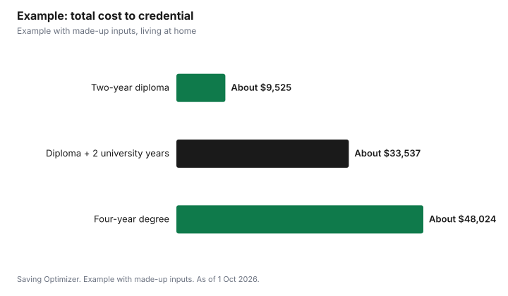

Education · Canada
College vs University Cost in Canada: Tuition, Fees and Years

In Canada, a year of college tuition usually costs far less than a year of university. In Ontario for 2026/2027, Mohawk College charges $2,762.24 in tuition for two semesters in most programs and Centennial College lists $2,775, while Statistics Canada's preliminary average university tuition for Canadian undergraduates in Ontario is $9,306. Across Canada the university average is $8,021. Compulsory ancillary fees, books and living costs come on top of both. The bigger difference is often length: many college diplomas take two years, and most university degrees take four. Compare the total cost to finish the credential you want, and what it leads to, not one year's tuition.
Key takeaways
- Average university tuition, Canadian undergraduates, 2026/2027: $8,021 in Canada, $9,306 in Ontario.
- Ontario college tuition for most diplomas: about $2,762 to $2,775 for two semesters.
- Some college programs cost more, such as Mohawk's Animation at $5,879.78 a year.
- Ancillary fees are extra: Mohawk lists $1,018.17 for two semesters before student association fees.
- Program length drives total cost as much as tuition.
- Example with made-up inputs: a two-year diploma versus a four-year degree.
University tuition by province
| Province | 2025/2026 | 2026/2027 |
|---|---|---|
| Canada | $7,772 | $8,021 |
| Ontario | $8,986 | $9,306 |
| Alberta | $8,091 | $8,260 |
| British Columbia | $6,937 | $7,117 |
| Quebec | $4,001 | $4,156 |
These are averages weighted across programs. Professional programs such as engineering, business and computer science can cost more than arts and science, and the averages include students from other provinces, who pay more in some provinces. Statistics Canada's table covers universities; it does not report college diploma tuition, so use college fee pages for that side.
Ontario college tuition
| College and program | Tuition | Notes |
|---|---|---|
| Mohawk College, most programs, first year | $2,762.24 for two semesters | $1,381.12 per semester |
| Mohawk College, Practical Nursing | $3,390.08 for two semesters | Higher-cost program |
| Mohawk College, Animation | $5,879.78 for two semesters | Higher-cost program |
| Centennial College, sample full-time | $2,775.00 | Ancillary fees vary by program |
Mohawk lists compulsory ancillary fees of $1,018.17 for two semesters at its Hamilton-area campuses, before student association fees such as the health and dental plan, plus program fees where they apply. Centennial notes that every program has ancillary fees that vary by program. Tuition is charged each term, so a three-semester program year costs more than a two-semester one.
How to read a fee page
College and university fee pages are organized differently, which makes comparisons harder than they should be. Look for four numbers for the year you will start: tuition per term or per year, compulsory ancillary fees, student association fees such as health and dental plans, and program-specific fees. Note whether amounts are per semester, per two semesters or per academic year, and whether returning-year students pay a different rate. Write all four into one table for each school before comparing.
Other costs that differ
- Applications: OUAC charges $159 for three university choices and $51 for each extra choice; Ontario Colleges charges $150 for up to five choices.
- Books and equipment: some college programs need tools, uniforms or kits; university programs vary.
- Housing: college students more often live at home, but it depends on where the program is; see the related guide on residence versus home.
- Co-op and placements: both may have co-op fees, and paid placements can offset costs.
- Time out of the workforce: a two-year diploma means two fewer years without full-time earnings than a four-year degree.
Pathways that combine both
Many students start at college and transfer to university, or finish a degree and then take a college graduate certificate. Transfer credit agreements differ by school and program, and not every college credit transfers, so check the agreement for the specific program before counting on fewer university years. Universities usually publish which college diplomas earn credit and how much, so read those pages and ask an admissions adviser. A good pathway can lower total cost by replacing one or two university years with lower college tuition, while still ending with a degree.
Student aid applies to both
Government student aid such as Canada Student Loans and Grants and provincial programs like OSAP is available for approved programs at eligible schools, which include many public colleges and universities; check that your program is approved before you apply. Federal loans have accumulated no interest since 1 April 2023. RESP withdrawals can also be used for either. Apply for aid whichever route you choose.
Earnings and time
Cost is only half the comparison; the other half is when you start earning and what you earn. A shorter program means you start full-time work sooner, while a longer one may lead to jobs that require a degree. Many college programs include field placements, and many universities offer co-op terms, which can add a semester or two but bring paid work experience. When you compare, write down the typical first job for each credential and ask each school for its graduate outcomes, such as employment rates for that program. Treat those figures as a starting point, since they cover past graduates and can vary by year.
Questions to ask each school
- What are total tuition and compulsory fees for each year of the program, including any extra semesters?
- Are there program fees, equipment or uniform costs?
- How many students finish on time?
- Which universities accept this diploma for transfer credit, and how much?
- Does the program include paid co-op or placements?
- What scholarships and bursaries are available to first-year students?
Example with made-up inputs
These numbers are an example with made-up inputs. Alex in Hamilton compares a two-year Mohawk diploma with a four-year university degree, living at home either way. College: tuition of $2,762.24 a year, ancillary fees of about $1,200 including student association fees (made-up), and $800 for books, about $4,762 a year, or about $9,525 for two years. University: tuition of $9,306 a year, made-up ancillary fees of $1,500 and books of $1,200, $12,006 a year, or $48,024 for four years. A pathway of two college years plus two university years after transfer would cost about $9,525 plus $24,012, or about $33,537, if all credits transfer.
| Route | Years | Approximate total |
|---|---|---|
| Two-year college diploma | 2 | About $9,525 |
| College diploma then two university years | 4 | About $33,537 |
| Four-year university degree | 4 | About $48,024 |

Steps
- Pick the career outcome, then list the credentials that lead there.
- Look up each program's tuition and ancillary fees for 2026/2027.
- Count years, including any extra semesters or co-op terms.
- Add books, equipment and housing.
- Check transfer agreements if you are considering a pathway.
- Apply for student aid and compare the net cost.
Common mistakes
- Comparing one year of tuition instead of total cost.
- Assuming every college credit will transfer.
- Ignoring ancillary and program fees.
- Forgetting that higher-cost college programs exist.
- Choosing on cost alone without looking at outcomes.
Related: first-year university costs and application fees and deadlines.
Sources
- Statistics Canada, Table 37-10-0045-01 Canadian and international tuition fees by level of study (released 16 Sep 2026), as of 1 Oct 2026. 2026/2027 preliminary.
- Mohawk College, 2026-2027 Annual Fees, mohawkcollege.ca, as of 1 Oct 2026.
- Centennial College, Tuition Information, Fee Schedule for the 2026-2027 Academic Year, centennialcollege.ca, as of 1 Oct 2026.
- Ontario Universities' Application Centre, Undergraduate Fees; Ontario Colleges, Application fees, as of 1 Oct 2026.
- Ancillary, book and total amounts in the example are made-up inputs and rounded.
Frequently asked questions
Is college cheaper than university in Canada?
Usually per year. Mohawk College lists $2,762.24 for two semesters in most programs for 2026/2027, while average Ontario university tuition for Canadian undergraduates is $9,306.
What is average university tuition in Canada?
Statistics Canada's preliminary average for Canadian undergraduates is $8,021 for 2026/2027.
How much is college tuition in Ontario?
For most diploma programs, about $2,762 to $2,775 for two semesters in 2026/2027, plus ancillary fees. Some programs cost more.
Are ancillary fees included in tuition?
No. Mohawk lists $1,018.17 in compulsory ancillary fees for two semesters, before student association fees.
Can I transfer from college to university?
Often, through transfer agreements, but credits depend on the program and school. Check the specific agreement.
Does OSAP cover college?
Government student aid generally covers approved programs at public colleges as well as universities.
Researched and drafted with AI assistance and fact-checked against official Canadian sources. How we create content.
Disclosure: Saving Optimizer may earn a commission if a partner link is added later. No partnership is claimed on this page. Education only.